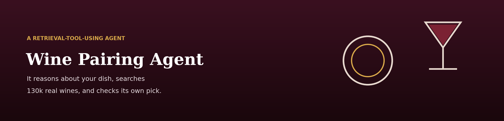
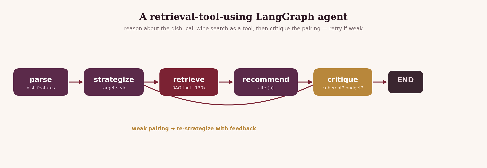

Retrieval answers "find me a wine like X."
Describe a meal — "grilled ribeye with peppercorn sauce", "spicy Thai green curry" — and a LangGraph agent reasons from sommelier pairing principles to a target wine style, then uses semantic search over 130,000 real reviews as a tool, recommends with citations, and critiques its own pick — retrying with a different strategy if the pairing is weak or nothing fits your budget.

parse → strategize → retrieve → recommend → critique, with critique looping back to strategize when the pairing is weak.
real reviews searched as a genuine LangChain
StructuredTool, invoked by name.
a full traced run end to end, with every node's time recorded and saved as JSON.
carries a [n] citation into a real review, and the
candidate list is printed alongside the recommendation.
Start · the distinction
My Wine Sommelier RAG answers a question that already contains its own search terms. "A bold red under $25" is close to a query. A meal is not: nothing in "grilled ribeye with peppercorn sauce" tells a retriever to look for firm tannin and dark fruit.
So the agent reasons about the dish first — body, fat, acid, spice — forms a pairing strategy, and only then turns that strategy into a query. Retrieval is a tool it decides to use, not the pipeline it lives in. And afterwards it asks whether the result is actually any good.

↓ a real run
Verbatim from examples/sample_run.md. Note that the candidate
list is printed too, so you can see what it chose from rather than
only what it chose.
$ python -m src.cli "grilled ribeye steak with a peppercorn cream sauce" --budget 45 ================================================================ PAIRING ================================================================ For a rich, char-grilled ribeye with peppery cream sauce, you want bold tannin to cut the savory fat and dark fruit to echo the char. Vinifera 2006 Cabernet Sauvignon, Napa Valley — 95 pts, $40 [3] This full-bodied, 100% Cab wraps blackberry and black currant around silky tannins with graphite and vanilla-sandalwood oak — the structure scours the cream and fat while the oak mirrors the grilled char. My top pick. Textbook 2005 Mise en Place Cabernet Sauvignon, Oakville — 94 pts, $44 [5] Firmly tannic with a dry astringency and ripe blackberry-currant depth; that grippy structure is exactly what a fatty ribeye needs. — Candidate wines (retrieved from 130k reviews) — [1] Stark-Condé 2011 Cabernet Sauvignon (Stellenbosch) · 92 pts · $27 [2] JD 2007 Cabernet Sauvignon (Diamond Mountain District) · 94 pts · $40 [3] Vinifera 2006 Cabernet Sauvignon (Napa Valley) · 95 pts · $40 [4] Foley Johnson 2013 Cabernet Sauvignon (Rutherford) · 92 pts · $45 [5] Textbook 2005 Mise en Place Cabernet Sauvignon (Oakville) · 94 pts · $44 [6] Las Vertientes 2014 Reserva Cabernet Sauvignon (Mendoza) · 92 pts · $40
Every candidate is inside the $45 budget, because the budget is a filter on retrieval rather than a request in the prompt. And the two picks are differentiated on style — one elegant, one grippy — instead of just ranked.
↓ observability
retrieve is a real LangChain StructuredTool the
agent invokes by name, which makes runs introspectable rather than a black
box. Add --trace and each node is timed, rendered as a tree, and
saved to traces/ as JSON.
AGENT TRACE (node · time · detail) ──────────────────────────────────────────────────── ● parse 1.2s ribeye · rich body ● strategize 2.3s style → full-bodied tannic red ● retrieve 0.3s 6 candidate wines (tool: search_wines) ● recommend 3.0s drafted pairing with citations ● critique 2.2s sound ✓ ────────────────────────────────────────────────────
Retrieval at 0.3 seconds against 2–3 seconds per LLM node is the useful detail: the local vector search is nearly free, and essentially all the latency is reasoning. When critique loops back to re-strategize, the extra pass shows up here — self-correction, made visible and measurable.
↓ the gap, reported not hidden
assets/make_trace_figure.py renders a saved trace as a timeline
figure. That figure has not been captured from a live run —
the script is written and runnable, but CLI throttling during the build meant
the render was never completed. The trace tree above is the real recorded
output; the timeline visualisation is not yet in the repository.
There is also no quantitative evaluation of pairing quality here, unlike the retrieval benchmark in the sommelier RAG. Pairing quality is genuinely harder to score — there is rarely one right answer — but that is an explanation for the gap, not a substitute for it. What this page shows is a working, traced, self-checking agent, not a measured claim that its pairings are good.
Finish · what it is built on
src/tools.py wraps retrieval as a LangChain StructuredTool the agent calls by namesrc/ingest.pysrc/pairing.py — the sommelier principles the strategize node reasons fromsrc/trace.py times each node, renders a tree, saves JSON